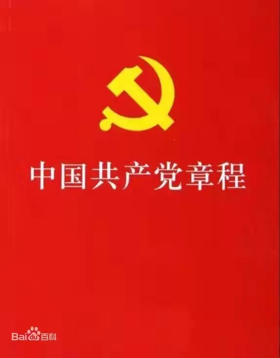

回顶部
导航栏
首页
绿色校园
党的历史
党的二十大
党章
红色电影
思想理论
优秀典范
党 章
回到首页
总 纲
第一章 党 员
第二章 党的组织制度
第三章 党的中央组织
第四章 党的地方组织
第五章 党的基层组织
第六章 党的干部
第七章 党的纪律
第八章 党的纪律检查机关
第九章 党 组
第十章 党和共产主义青年团的关系
第十一章 党徽党旗

党章的地位和作用
党章就是党的根本大法，是全党必须遵循的总规矩
唤醒党章党规意识 推进制度创新
《中国共产党章程（修正案）》诞生记
中国共产党历次党章的制定及修正
中国共产党章程（2017年修改）
中国共产党章程（2012年修改）
中国共产党章程（2007年修改）
中国共产党章程（2002年修改）
中国共产党章程（1997年修改）
中国共产党章程（1992年修改）
中国共产党章程（1987年修改）
中国共产党章程（1982年通过）